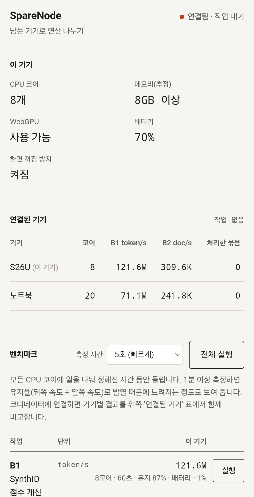
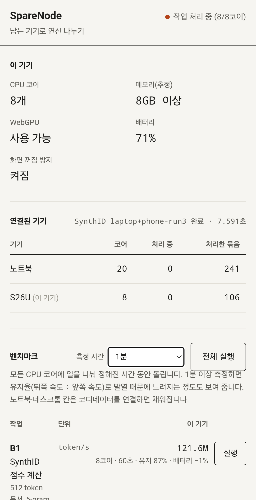
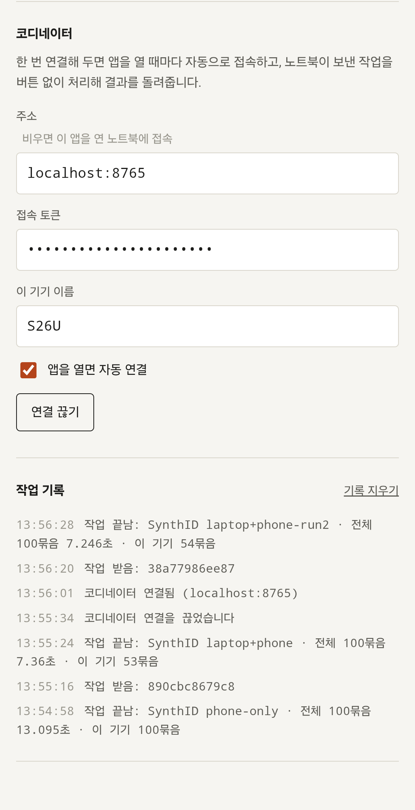
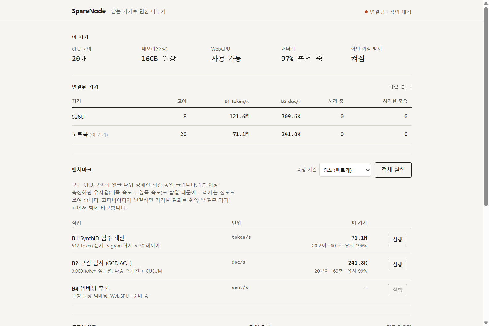

에너지시스템과AI · Claude Code 실습 미션
놀고 있는 스마트폰을 AI 연산 노드로 쓰는 PWA
왜 만들었나
기존 방법의 불편함
구조
버튼 없이
앱을 열면 자동 접속, 작업이 오면 바로 처리
앱은 그대로
작업 코드를 실행 중에 받아서, 작업이 바뀌어도 앱 재배포 불필요
결과만 반환
RAM을 빌리는 게 아니라 일을 나눠 맡김
왜 PWA인가
| PWA (이번 방식) | 네이티브 앱 / Termux | |
|---|---|---|
| 설치 | 주소 열고 '앱 설치' | 스토어·APK·패키지 설정 |
| 안드로이드·아이폰 | 하나로 둘 다 | 각각 따로 |
| 보안 | 브라우저 샌드박스 폰 파일·다른 앱 접근 불가 | 앱 권한에 따라 다름 |
| 오프라인 | 서비스 워커로 실행 | 가능 |
| 한계 | 화면이 켜져 있어야 계산 (백그라운드 실행 불가) → 측정·연결 중 화면 꺼짐 방지 | |
PWA를 이루는 파일
글꼴 원칙
구글 글꼴 등 외부 글꼴 연결 없음 → 기기 기본 글꼴만 사용해 첫 화면 로딩을 빠르게
앱 화면




디자인: 그라데이션·그림자·카드 없이 실험 기록지처럼. 강조색 1개(적갈색)는 '연결·처리 중'에만 사용
작업이 바뀌어도 앱은 그대로
// tasks/synthid_seeded.js — 폰·노트북이 받아 실행하는 작업 function run(input) { const { seed, docs, tokens, keys } = input; // 문서 생성 → 5-gram 해시 × 30 레이어 → g-value 평균 ... return { n: docs, mean: total / docs }; }
# 노트북 AI(또는 사람)가 쓰는 쪽 from sparenode_client import run_job inputs = [{"seed": i, "docs": 20000, ...} for i in range(100)] # 100묶음 out = run_job(code, inputs) # 분담: {'S26U': 53, '노트북': 47}
결과 ① 기기 단독 성능 (1분 측정, 같은 시각)
B1 SynthID 점수 계산 · 백만 token/s
B2 구간 탐지 (GCD·AOL) · 천 doc/s
| S26 Ultra | 노트북 | |
|---|---|---|
| CPU 코어 | 8 | 20 |
| 1분 유지율 B1 / B2 | 87% / 85% | 196%* / 99% |
| 배터리 | −1%/분 | 충전 중 |
유지율 = 뒤쪽 속도 ÷ 앞쪽 속도. 폰은 1분 사이 발열로 13~15% 느려짐.
* 노트북은 측정 초반이 느렸음(전원·클럭 상태). 따로 잰 1분 측정에서는 B1 103.1M token/s — 그 경우에도 폰이 더 빠름.
결과 ② 같은 작업을 나눠 처리 (문서 200만 개 · 100묶음)
처리 시간 · 초 (짧을수록 좋음)
노트북+폰은 3회 평균 (9.38 · 9.27 · 9.69초)
에너지 관점
정직하게 남은 것
미션 진행
한계와 다음 단계
지금의 한계
다음 단계
정리
설치는 주소 하나 · 작업은 노트북이 보내고 · 폰은 켜 두기만